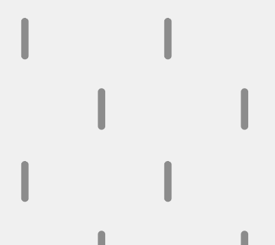

⨯
Le projet Métiers invisible a pour but de montrer les métiers qui nous entourent durant cette crise sanitaire. Ces métiers sont pour la pluspart les moins bien payés et les moins bien valorisé dans notre société alors qu'ils font partie actuellement des métiers considéré indispensable par l'État.
Dominique Méda, sociologue et philosophe remet en question la place du travail dans notre vie. Elle nous explique qu'à l'heure de cette crise sanitaire mondiale les métiers importants sont ceux qui nous permettent de continuer à vivre. Les métiers alimentaires et médicaux, mais aussi ceux du "care". Qui sont des métiers qui "consistent à apporter une réponse concrète aux besoins des autres - travail domestique, de soins, d'éducation, de soutien ou d'assistance" et sont en très grande majorité fait par des femmes (qui auraient naturellement ces capacités d'attention, de soin, d'écoute... etc).
Dominique Méda : "La crise du Covid-19 nous oblige à réevaluer l'utilité sociale des métiers",
Pour l'Éco, 23 avril 2020.
Face au coronavirus, « nous redécouvrons l’utilité immense de métiers invisibles »,
20 minutes, 27 mars 2020.
⨯
Légende :
La carte montre la zone à laquelle j'ai accès : 1km autour de chez moi.
bla Services publics
bla Secteur médical et care
bla Métiers qui travaillent autrement
bla Commerces alimentaires
 Espaces publics autorisé d'accès
Utilisation de l'espace autorisé :
_ _ _ En courant
- - - En marchant
⨯
Médecins généraliste
Femme
Travail uniquement en visio depuis le confinement.
⨯
Infirmière à domicile, aide soignante, aide-ménagère
Ces métiers sont réalisés quasiment strictement par des femmes.
La part de femme dans le métier d'aide-soignantes est de 90,4%. (Source: inegalites.fr)
La part de femme pour le métier d'infirmières et sage-femme est de 87,7%. (Source: inegalites.fr)
⨯
Chargé d'accueil, conseiller
La Poste_03/04/2020_14:37
2 femmes
Envoie d'un colis, 2 agents femmes sans masques sont présente.
⨯
Standardiste
Caf et assurance maladie_03/04/2020_11:43
Femmes
Les centres d'appels fonctionnent toujours et sont surchargés, principalement du au fait qu'il n'y ait pas tous les employés.
⨯
Vendeur
Carrefour_29/04/2020_17:12
2 hommes
La part de femme dans la vente est de 73,5%. (Source: inegalites.fr)
⨯
Commerçants
Mistinguette_15/04/2020_11/45
1 homme, 1 femme
Ils réalisent de la vente à emporter ou de la livraison pour pouvoir continuer de travailler.
⨯
Boucher
Boucherie St Aubin_05/04/2020_11:15
3 hommes, 1 femme en caisse
⨯
Pharmacienne
Pharmacie St Aubin_29/04/2020_15:48
2 femmes
⨯
Boulanger
Boulangerie St Aubin_29/04/2020_17:30
1 femme en caisse
⨯
Monteur fibre, et S.A.V.
À mon domicile_09/04/2020_08:25
2 hommes
Qui réalisent du S.A.V. depuis chez eux en dehors des interventions chez les clients. Réalisées dans le "respect des gestes barrières". Ils sont indispensable au télétravail.
⨯
Facteur
Rue André Mercadier_2 fois/semaines
1 homme
⨯
Gérant et pizzaïolo
Petite Italie_26/04/2020_21:15
1 homme
Il doit fermer plus tôt que d'habitude. Mais aujourd'hui il a dépassé.